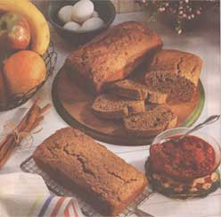
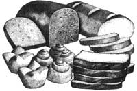

NATURAL KITCHEN
MOTHER'S KITCHEN
Gone are days when baking fresh bread meant sacrificing the whole day.
FRESH FROM THE OVEN:
Quick breads take much less preparation time than cakes, can be frozen for a week in advance, and are a heck a lot easier to wrap as gifts than Christmas cookies.
Maybe you remember waking up to your Grandma's fresh-baked bread cooling on a countertop, filling the house with its warm, sugary aroma. Or maybe you wish you'd had a Grandma who baked. Either way, most everyone appreciates a piping hot loaf of bread come wintertime.
While I'd like to tell you how I rise every day at dawn to set the yeast in motion, kneading and working the dough all morning - this piece ain't fiction. The real story is that I'm a teacher, surrounded by very active children by 9 A.M. each Monday through Friday, with no morning time to spare. However, I constantly get cravings for slices of homemade bread, so I found a solution: quick breads. Because there's no yeast in these breads, I'm not tied to the house for hours waiting for them to rise.
Quick breads are ideal for the holidays, the busiest baking season. (" 'Tis the season to be jolly," not flat out exhausted.) They take up less preparation time than cakes, can be frozen for a few weeks in advance, and are a heck of a lot easier to wrap than Christmas cookies.
But you know I'm a health buff, and you're probably wondering how we're going to magically produce moist, cake-like breads while using whole grains and less sugar and fat. But don't worry - you'll hardly know they're gone. Instead of using cups of sugar, we'll sweeten with fruit or other natural sweeteners. For not-so-sweet breads such as cornbread, we'll cut back on the oil and buttermilk. The main objective is to create healthier alternatives to old family recipes. The other goal is to avoid making bread so solid it could brick a patio.
NATURALLY SWEET:
While sugar is the most obvious choice of sweeteners for many of us, there are plenty of healthier alternatives. Try applesauce, pureed fruit, or molasses.
Ingredients:
Use whole wheat pastry flour (made from soft wheat berries) instead of whole wheat flour to produce a lighter bread.
Buy small cans of baking powder to ensure the powder remains fresh.
Use yogurt to create moist, less crumbly breads.
Cut down on sugar by using honey, rice syrup, barley malt syrup, maple syrup, molasses, applesauce, pureed fruit, and fruit-juice concentrate. Make breads sweeter by adding fresh or dried fruit such as currants. A little sugar, however, is sometimes necessary to help the bread rise.
Add extra flavor by adding spices, lemon or orange rind, extracts, and liqueurs.
Reduce fat by using one egg instead of two, or two egg whites in place of one whole egg. By using mashed banana, pumpkin, or yogurt, you can reduce the amount of oil to only two tablespoons.
Equipment
Use an electric mixer (hand mixers are fine) to beat air into the dough. Be careful not to overmix.
Don't use cheap nonstick pans. The whole grains and natural sweeteners will cause the bread to burn on the outside while remaining mushy inside. I use only tin-plated pans for my baking. They require a little extra care but produce excellent results. Invest in some miniloaf pans. The baking time is less and there's less chance of the bread falling in the center.
Method:
Bake just until an inserted toothpick comes out clean. Overbaking results in a dry, crumbly bread. If the outside of the bread is getting too dark but the inside is still sticky, reduce oven temperature to 325°F for the last 15 minutes of baking.
Cool breads thoroughly on a rack before removing the bread from the pans. Loosen around the edges first with a pan cake turner.
To freeze, wrap bread loaves individually in plastic wrap and then place in plastic freezer bags. Loaves can be frozen for a few weeks.
Orange Poppy-Seed Bread
This bread contains no sugar and is sweetened with sugarless marmalade.
1 egg
2 tablespoons oil
2 tablespoons honey
1/2 cup skim milk
1/2 cup fruit-juice - sweetened orange marmalade
2 teaspoons orange rind, grated
1/4 cup poppy seeds
2 cups sifted whole wheat pastry flour
1/2 teaspoon baking soda
1 1/2 teaspoons powder.
Preheat oven to 350°F. Lightly grease standard loaf pan. Beat well all wet ingredients and poppy seeds with an electric mixer. Mix in dry ingredients. Pour into pan and bake 45 to 50 minutes until an inserted toothpick comes out clean. Cool on a rack before removing bread.
Spiced Apple Miniloaves
1 egg
2 tablespoons oil
1/2 cup low fat buttermilk
1/4 cup apple cider or juice
1/4 cup light molasses or maple syrup
2 tablespoons brown sugar, packed
2 teaspoons cinnamon
1/2 teaspoon ground ginger
1/4 teaspoon nutmeg
1/2 teaspoon baking soda
1 1/2 teaspoons baking powder
2 1/4 cups sifted whole wheat pastry flour
1 apple (approximately 1 cup), chopped into small pieces
1/4 cup chopped walnuts (optional), toasted
Preheat oven to 350° F. Toast nuts on a baking sheet in oven for 10 minutes while making bread. Mix well all ingredients up to and including nutmeg. Mix in dry ingredients until just blended. Stir in apples.
Pour into three greased (on bottom) or nonstick miniloaf pans. If desired, sprinkle walnuts on top. Bake for 30 to 40 minutes until loaves are medium brown and an inserted toothpick comes out clean. Cool on rack before removing from pans. Serve with apple butter or yogurt cheese if desired.
Corn Bread
2 eggs
1/4 cup oil (I use canola)
1/4 cup maple syrup
1/2 cup low-fat buttermilk
1/3 cup skim milk
1 cup plus 1 tablespoon stone-ground yellow cornmeal
1/2 cup sifted whole wheat flour
1 tablespoon baking powder
pinch salt
2 tablespoons sunflower or sesame seeds for topping, toasted (optional)
Preheat oven to 400°F. Mix all wet ingredients together well. Mix in dry ingredients (except seeds) lightly. Pour into a greased-bottom 8" or 9" round cake pan. Top with seeds or leave plain. Bake 25 to 50 minutes until light brown and an inserted toothpick comes out clean. Slice into wedges and serve warm or cold.
Dill Bread
1 egg
1/4 cup oil (I use canola)
1 cup low-fat buttermilk
2 tablespoons sugar
1 tablespoon honey
1 teaspoon grated orange rind
2 cups whole wheat pastry flour
2 1/2 teaspoons baking powder
1 tablespoon plus 1 teaspoon dried dill
Preheat oven to 350°F. Beat egg, oil, buttermilk, sugar, honey, orange rind, and dill. Beat in flour and baking powder just until there are no lumps. Pour into standard-size greased loaf pan. Bake for 45 to 50 minutes until an inserted toothpick comes out clean.
Double Banana Bread
(makes two loaves)
4 eggs
2/3 cup oil (can reduce to 1/2 cup)
2 tablespoons buttermilk
2 teaspoons yogurt
2 tablespoons lemon juice
1 teaspoon lemon rind
1 teaspoon vanilla
1/3 cup honey
1/3 cup brown sugar
2 cups bananas
1 teaspoon soda
3/4 teaspoon nutmeg or mace
1/2 cup wheat germ
4 cups sifted whole wheat pastry flour
1 tablespoon baking powder
1/3 cup walnuts (optional), chopped
Preheat oven to 350°F Lightly oil bottom of two loaf pans or five miniloaf pans. Mash bananas in glass measuring cup. Using an electric mixer, beat together all ingredients up to and including nutmeg until well mixed. Slowly beat in wheat germ, flour, and baking powder until just mixed. Pour evenly into pans and sprinkle nuts on top.
Bake for 45 to 50 minutes if using standard pans or 20 to 25 minutes if using minipans. If you find that larger loaves start becoming too brown before an inserted toothpick comes out clean, reduce oven temperature to 325°F for the last 15 minutes.
Cool on racks before removing loaves from pans. Loosen them first with a spatula before turning the pans upside down to release loaves.
|
 |
 |
|